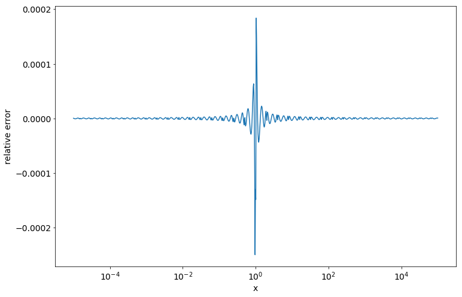

Python implementation of logapprox fucntion
from ctypes import (
Union, Array,
c_float, c_int32,
cdll, CDLL
)
class u_type(Union):
_fields_ = ("f", c_float), ("i", c_int32)
# load printf function from Dynamic Linked Libary libc.so.6
if os.uname().sysname == 'Darwin':
libc = CDLL(cdll.LoadLibrary('libc.dylib')._name)
else:
libc = CDLL(cdll.LoadLibrary('libc.so.6')._name)
printf = libc.printf
if __name__ == "__main__":
# initialize union
_32bitsdata = u_type()
# set values to chunk
_32bitsdata.f = 10.0
# and print it
#printf(b"Data in 32 bits: %.f\n", _32bitsdata.f)
@np.vectorize
def logapprox(val):
valu = u_type()
valu.f = val
exp = c_float()
add_cst = c_float()
x = c_float()
exp = valu.i >> 23
if val > 0.0:
addcst = -89.970756366
else:
addcst = -float('inf')
valu.i = (valu.i & 0x7FFFFF) | 0x3F800000
x = valu.f
return x*(3.529304993 + x*(-2.461222105 +\
x*(1.130626167 + x*(-0.288739945 + x*3.110401639e-2)))) \
+ (addcst + 0.69314718055995*exp)plt.figure(figsize=(12, 8))
mpl.rcParams['font.size'] = 14
x = np.logspace(-5, 5, 1000)
y = np.log(x)
yapprox = logapprox(x)
plt.semilogx(x, (y - yapprox)/y)
plt.xlabel('x')
plt.ylabel('relative error')Text(0, 0.5, 'relative error')

References
Vectorizable implementations of some mathematical functions (exp, log, sin, cos)
https://github.com/jhjourdan/SIMD-math-prims
https://stackoverflow.com/questions/45383771/equivalent-c-union-in-python